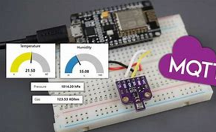
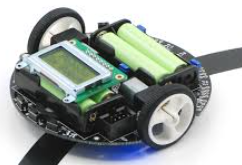
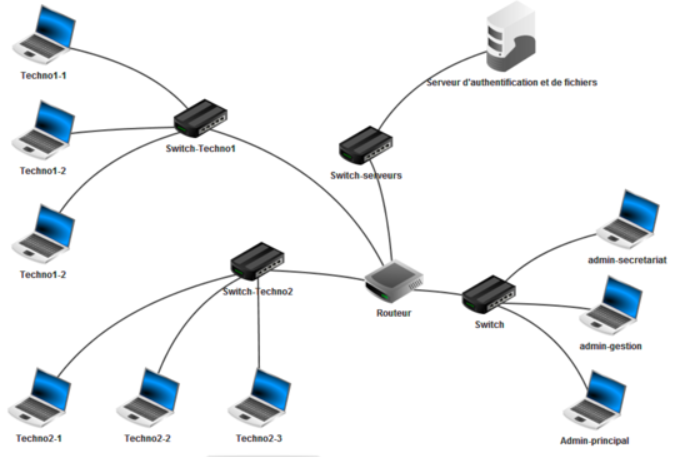

Développement d’une API sécurisée avec Django REST Framework (CRUD Parents/Enfants/Fiches/Messages),
authentification JWT et gestion des rôles (parents, administrateur).
Migration Firebase → PostgreSQL (schéma relationnel, intégrité, performances), messagerie parents-support,
et interface React (login, fiches filtrées par niveau, état et redirections).
Robot autonome programmé en C, Java, VHDL : logique de navigation, simulation capteurs,
et validation sur maquette. Renforcement en logique embarquée et conception système.
🌡️ Multi-capteurs connectés — IoT & MQTT

Système domotique ESP32 (température, humidité, gaz, présence). Données en temps réel via MQTT
vers Raspberry Pi, visualisation Node-RED. Électronique + protocoles réseau + cloud local.
🧭 Robot Pololu — Suiveur de ligne

Suiveur de ligne à capteurs infrarouges, PWM (ISIS), microcontrôleur PIC, gestion d’obstacles,
calibration capteurs et CAO de la carte en équipe.
🌐 Réseaux & Simulation — Cisco Packet Tracer

VLAN, routage IP, supervision, configuration d’équipements sous Packet Tracer. Compréhension des couches réseau et mise en pratique des protocoles.
📋 Gestion de projet — Organisation & Suivi
Projet d’équipe : Gantt, définition des fonctions, planification, répartition, tests et retours terrain.
Système de tri avec vérins, capteurs et bras manipulateur. Pilotage via API Siemens et IHM dédiée.
Approfondissement en logique de contrôle, capteurs industriels et supervision.